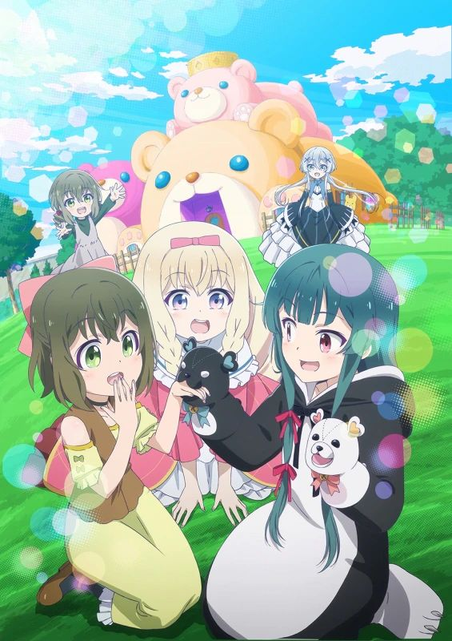

2019년 12월 30일에 TV 애니메이션화 소식이 유출되었다. # 그리고 2020년 1월 7일에 애니화가 결정되었다. 동년 3월 26일 주요 캐스트, 제작진 및 제작사가 공개되었는데 쿠마미코, 백련의 패왕과 성약의 발키리와 어새신즈 프라이드 등 매번 연달아 좋지 않은 평가를 받았던 제작사인 EMT 스퀘어드가 제작을 맡은 것이 확인되면서 팬덤의 우려가 커지고 있다. 정말로 큰 걱정은 제작사가 아니라 감독인 노부타 유우로, 하이스쿨 플릿에서 여주인공 미사키 아케노의 일관성 없는 완전 억지적인 행동이나 인간을 정신 조종병을 전염하는 미친 햄스터 등장 등의 엉터리 억지 설정과 연출로 대단히 실망스러운 모습을 보인것이 많아서 과연 곰 곰 곰 베어의 연출과 제작을 얼마나 제대로 할지에 대한 우려가 있다. 게다가 동 분기에 마에세츠! 감독까지 맡는다는 사실이 밝혀지면서 더욱 우려가 커지고 있다. 그리고 1화 선행컷부터 유나의 이세계 이동이 아닌 블랙 바이퍼 퇴치의뢰부터 시작하는 엄청난 순서 변경이 이루어졌다는 게 밝혀지면서 더욱 우려를 사고 있다. 6월 25일에는 CM과 함께 방영 시기가 결정되었다. 2020년 10월 7일부터 방영한다. 매주 토요일 약 30초짜리 초단편 외전 '베어 베어 베어 곰'이 업로드된다. 본편보다 이게 더 평이 좋다 북미에서는 2021년 1월에 퍼니메이션에 의해 영어 더빙이 제작 및 공개되었다.
